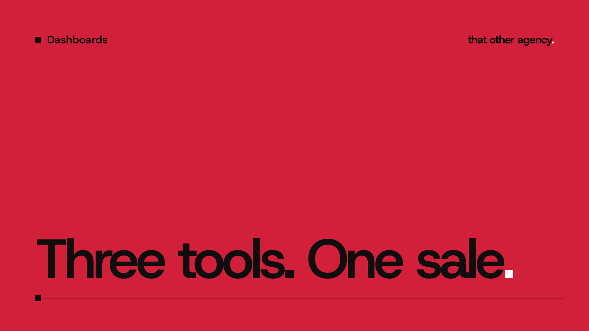

Dashboards
Klaviyo, Meta and Google all claim the same sale. Here is the real number.

If your Klaviyo revenue doesn't match Shopify, you are in good company. Add Klaviyo's attributed revenue to what Meta and Google say they made, and most stores find the three together claim more than the store actually sold. Nobody is lying. Each tool counts the same order for itself. This guide explains why, works through an example in pounds, and shows the one number that cannot be double counted.
Why Klaviyo revenue doesn't match Shopify
Five things push Klaviyo's figure, and the ad platforms' figures, above what really happened.
- Every tool only sees itself. Klaviyo uses a last touch model by default, but "last" means the last Klaviyo message. It has no idea the customer clicked a Meta ad an hour before. Meta and Google do the same from their side. One order, three owners.
- Opens count. By default Klaviyo can credit an order to an email that was only opened, not clicked, within five days. Apple Mail Privacy Protection loads emails in advance on many iPhones, which registers as an open whether or not anyone read it. Klaviyo says these opens can count unless you exclude them. So a customer who bought after seeing an ad may count as an email sale because their phone opened a newsletter in the background.
- The windows are different and generous. Klaviyo's default is five days after an email open or click. Meta's default is seven days after a click or one day after a view. Google Ads defaults to thirty days after a click. A customer who touches all three in a fortnight can be claimed by all three.
- Values are measured differently. Platforms usually report the order value your tracking sends, which often includes VAT and sometimes shipping. Shopify's net sales take out tax, shipping, discounts and refunds. A refund comes off Shopify and stays on every platform report. We covered the VAT side in ROAS and VAT.
- Some flows sit right before the till. Abandoned basket and abandoned checkout flows email people who were already most of the way to buying. They do bring some orders back, but many of those customers would have returned anyway, and Klaviyo credits all of them to the flow.
A worked example in pounds
Take a made up store. In one week Shopify records net sales of £30,000 excluding VAT. The platforms report:
- Meta Ads Manager: £15,600 of purchases
- Google Ads: £9,000 of conversion value
- Klaviyo: £14,400 of attributed revenue
That is £39,000 claimed. All three are sending order totals including VAT, so take the VAT out and you get about £32,500. That is still £2,500 more than the store sold, and it leaves nothing at all for people who found the store through organic search, a friend or a podcast mention.
Now the founder reads the Klaviyo dashboard, sees £14,400 a week from email, and decides to send twice as many campaigns. Klaviyo's figure goes up, because more emails means more opens inside more windows. Shopify sales barely move, and unsubscribes climb. The tool that measures itself said the plan worked. Only Shopify said it did not.
How to find the real number
- Start with Shopify net sales. It is the only figure tied to money arriving in the bank, and every order is counted once.
- Divide by total marketing spend. Put every ad platform's spend together, plus what you pay for Klaviyo and any agency running it. Sales divided by that total is MER, and attribution cannot flatter it.
- Split new and returning customers. Email mostly sells to people who already know you. Shopify's first time customer count, set against ad spend, tells you whether the ads are finding new buyers.
- Test email with a holdout. Split one flow so a random tenth of people get nothing, run it for a few weeks, then compare the two groups' orders in Shopify. The difference is what the flow really adds.
- Use each platform for comparisons inside it. Klaviyo is good for telling you which flow or subject line did better than another. Its counting is skewed, but skewed the same way for every email.
Three Klaviyo settings worth checking
- Exclude Apple privacy opens from attribution, or count clicks only. Your Klaviyo revenue will fall, and it will be closer to the truth.
- Look at the attribution window. Five days is generous for a store whose customers usually buy the same day. Klaviyo applies a change only to conversions after you make it, so note the date.
- Agree on one value basis. Check whether your reports include VAT and shipping, and write down which basis your team reports on, so a figure in one meeting means the same thing in the next.
None of these settings makes Klaviyo agree with Shopify. They make it a little less generous, which helps when you compare one email with another.
What we do on client dashboards
Every custom dashboard we build takes sales and new customers from Shopify, spend from every ad platform, and shows MER and cost per new customer from those figures. Each platform's own claim stays on the screen, labelled as the platform's view, so you can see how far apart they are without adding them up. Our live dashboard demo shows a working example with made up data. If you want the same for your store, every build starts with a consultation and a fixed quote. For more on the ad side, read why Shopify and Meta never show the same sales.
Frequently asked questions
Is Klaviyo's attributed revenue wrong?
It is correct by its own rules. It shows orders that followed a Klaviyo message inside its window. It does not show orders that happened because of a Klaviyo message, and it cannot see the ads the same customer clicked. Treat it as Klaviyo's opinion of itself.
Should email revenue be a set share of Shopify sales?
There is no right share. A brand with lots of repeat buyers will see a bigger share than one selling a product people buy once. Watch the trend in your own Shopify sales from returning customers rather than chasing a benchmark.
Can I add up the platforms if I take VAT out?
No. Taking VAT out fixes the value basis, but the same order is still claimed by more than one platform. Adding them up will nearly always come to more than you sold.